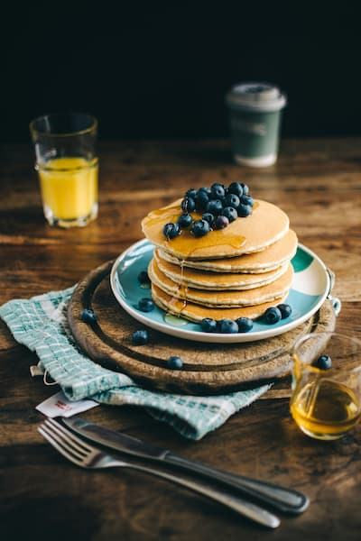

Pancakes

Description
These fluffy pancakes are perfect for a weekend breakfast. Serve with syrup and your favorite toppings.
Ingredients
- 1 1/2 cups all-purpose flour
- 3 1/2 teaspoons baking powder
- 1 teaspoon salt
- 1 tablespoon white sugar
- 1 1/4 cups milk
- 1 egg
- 3 tablespoons butter, melted
Steps
- In a large bowl, sift together the flour, baking powder, salt, and sugar.
- Make a well in the center and pour in the milk, egg, and melted butter; mix until smooth.
- Heat a lightly oiled griddle or frying pan over medium-high heat.
- Pour or scoop the batter onto the griddle, using approximately 1/4 cup for each pancake.
- Brown on both sides and serve hot.